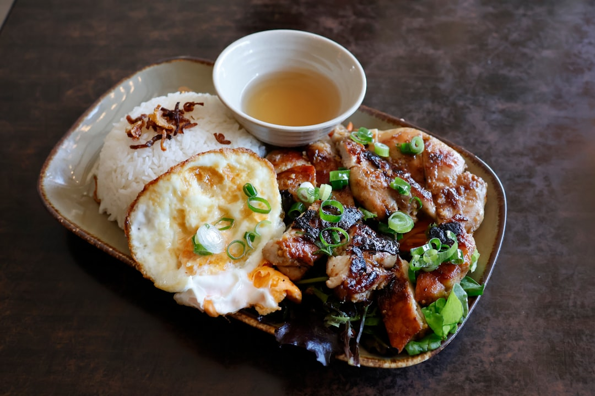

For diners comparing restaurants melbourne options, the useful starting point is matching the meal type, location, review evidence and booking needs before choosing a venue.
Restaurants Melbourne Explained
Best Melbourne Restaurants presents a dining directory, so use it for shortlisting rather than treating one listing as the answer. Start with the occasion, then check whether the listing gives enough detail for the next step, such as a menu check, booking enquiry, function question or direct contact request.
The useful filters are category, location and listing depth. A family meal, plant based dinner, seafood booking or private dining enquiry will each need different checks before contact.
- Use category first when the meal style is fixed, such as Italian, seafood, steak and grill, fine dining or vegetarian and vegan.
- Use location first when travel time, an event plan or a nearby suburb matters most.
- Use listing depth to decide whether to call, email, request a quote or open the venue profile.
Who this applies to
This guide suits diners who want a grounded way to shortlist Melbourne venues without relying only on a star score or a category label. It is relevant for everyday meals, special occasion bookings, family friendly searches, private dining questions and plant based options across named Melbourne areas.
The source page names Flinders Lane, Carlton, St Kilda, Richmond, Collingwood, Fitzroy, Northcote, South Yarra, Docklands, Southbank, Glen Waverley, Kew and Prahran in its examples and browsing paths. Use those names as search paths, then ask venue specific questions. A Southbank steakhouse search, a Carlton vegan search and a Flinders Lane Italian booking do not need the same checks.
Visitors may care most about a restaurant near a hotel, event or transport route. Locals may weigh repeat value, group size, dietary fit, noise tolerance and whether the venue suits a casual meal as well as a planned celebration.
Turn categories into booking questions
The directory groups venues into Asian, casual and family, fine dining, Italian, Modern Australian, general restaurants, seafood, steak and grill, and vegetarian and vegan. Treat those labels as prompts for sharper questions. Fine dining usually calls for a menu and availability check. A casual and family search should test seating, flexibility and whether mixed ages will be comfortable.
Italian appears in the featured listings through Vapiano Flinders Lane and The Hardware Club. Vapiano is described as a verified Italian venue in Melbourne, with its own site used for menu and private dining or function information. The Hardware Club is described as authentic Italian dining in Melbourne. One search may need current function details, while another may only need a table for a classic Italian meal.
Vegetarian and vegan has its own browsing path. Green Man's Arms is presented as a Carlton vegan restaurant offering plant based cuisine, which is useful when the whole meal should be vegetarian or vegan from the start.
Read reviews with listing context
The featured listings show review counts and ratings: Vapiano Flinders Lane at 4.2 from 5328 reviews, Kantina at 5.0 from 2 reviews, The Hardware Club at 4.7 from 803 reviews, Green Man's Arms at 4.5 from 1216 reviews and Claypots Barbarossa at 4.4 from 795 reviews. Read those figures as comparison evidence, not a promise about your meal.
A high rating from a small number of reviews and a slightly lower rating from many reviews answer different questions. The first gives a limited public sample, while the second gives a broader signal. Check the description, category, photos and contact path before booking.
The page also points readers to photos, services and pricing signals. A stronger shortlist is the one where category, location, review base, menu information and contact options support the same choice.
Contact and confirmation checks
The published process is to search by provider type or location, compare reviews, photos, services and pricing, then contact the venue directly by call, email or quote request form. Before making contact, write down the details that affect the answer.
- Date, time and party size for a standard meal.
- Dietary needs if the group includes vegetarian, vegan or other menu requirements.
- Guest count, preferred format and menu expectations for a function or private dining enquiry.
- Whether the location needs to fit an event, work plan, hotel stay or transport route.
Do not treat a listing description as final confirmation. The page itself says to check current menus, trading details and booking availability through the relevant venue information where needed, especially for functions, private dining and special occasion meals.
Local browsing without overreading suburbs
Location browsing is strongest when it solves a real dining constraint. St Kilda, Richmond, Collingwood, Fitzroy and Carlton appear in vegetarian and vegan browsing paths. Seafood searches include Northcote, South Yarra, Docklands and Southbank. Steakhouse browsing includes Glen Waverley, Kew, South Yarra, Prahran, Richmond, Docklands and Southbank.
Use those paths to reduce travel friction and narrow the shortlist. If the meal follows an event near Southbank or Docklands, proximity may matter more than a small rating difference. If the group is already in Carlton, a nearby vegan or Italian option may be a better fit than a venue across town.
Category and suburb create the shortlist. Menu fit, availability, group needs and contact response decide whether the booking should go ahead.
- Pick the constraint. Decide whether cuisine, location, dietary need, group size or occasion is driving the search.
- Shortlist by category. Use the listed provider types to remove venues that do not match the meal style.
- Compare evidence. Read ratings, review counts, photos, services and pricing signals together.
- Confirm current details. Check menus, trading details, booking availability and function information directly before committing.
- Contact with specifics. Send the date, time, party size, dietary needs and function requirements so the venue can respond clearly.
| Comparison path | Best when | Check before booking |
|---|---|---|
| Category first | The cuisine or meal style is already decided | Menu fit, dietary options and service format |
| Location first | Travel time or event plans shape the night | Exact area, availability and contact details |
| Review first | Public feedback is an early filter | Review count, rating context and listing description |
| Function enquiry | The meal involves a group or private dining need | Guest count, menu format, quote request and current availability |
This guide covers how to compare Melbourne dining listings by category, location, review evidence and direct booking checks.